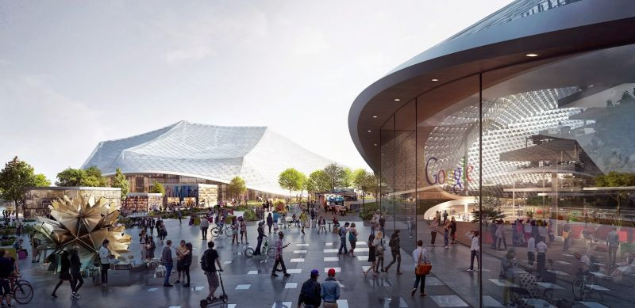

Google, ubiquitous in their association with internet searching, have kept their building up to this point rather constrained. They have developed a sizeable campus of buildings that resembles the college campuses that developers are familiar with. Google makes use of its ample green space to encourage employees to take in the sunny California weather, and even provides bicycles for them to use as they commute from building to building. Google's campus, known as the Googleplex, is mostly nondescript office buildings, having risen up quickly since the company's founding in 1998. The main building on campus is the most impressive, with a modern façade that rivals those found on modern religious buildings. The futuristic look and bright colors match with the company's marketing, giving the impression that the complex contains the most advanced technology in the world, which it does, while not being outrageous.
While the current state of the campus is rather modest considering that Google employees 57,000 employees, future plans are more grandiose: Google intends on building a large dome structure to cover it's campus. This 60s-style extreme-futurism may be seen by some as extreme and wasteful, sparking the question: why? While Google has no statement on the matter, speaking rarely about the project (which has yet to break ground), a little research provides some ideas: Google's founders have expressed great admiration for the counter-culture movements of the 1960s, especially the idea of communal living. Indeed, the first ever "Google Doodle" which now frequently decorate the front page of the search engine was meant as an announcement that the team behind the project was vacating the office for a week to attend the Burning Man festival, which celebrates art, community, and free expression by providing attendees with the chance to live on a desert for up to ten days. Many have called the event a "modern woodstock", furthering the association.
While appealing, the dome structure is impractical and somewhat concerning. In the connected world that Google is seeking to build, there is little place for one of the world's most influential companies to be segregating itself from the outside: by constructing the dome, Google would quite literally be encouraging its employees to live in a bubble; this kind of isolationism is unacceptable. Silicon Valley already suffers from racial tensions, intense classism, and social expectations of wealth and prosperity that drive out the less fortunate, to build a bubble around Google's campus would serve to further this idea that there's little room for upward movement into the prosperity that working at Google (and similar companies), contradicting the work that Google is doing to bring more under-represented demographics into the technology industry.